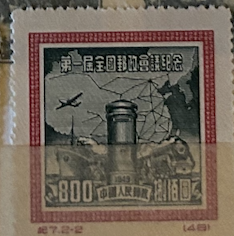
| SOURCE | TITLE| IMAGE MATCH | click to source page |
| eBay | Lot of 2 PRC Chinese 1st National Post Conference Stamps, 1955, Lot #615 | eBay | 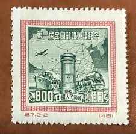 |
| eBay | AOP) China PRC #72-73 cto used. 1950 1st All China Postall Conference reprints? | eBay | 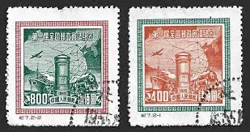 |
| eBay UK | CHINA 1949 NORTH-EAST-CHINA POSTAL STAMPS 2500/5000 SC#162-3 MNH VF/XF RARE SET | eBay UK | 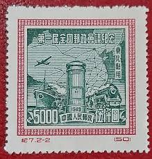 |
| eBay | China PRC 1950 Postal Conference Stamps #72-73 Reprint MH FREE Ship after 1st Lo | eBay | 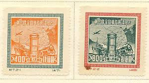 |
| eBay | Nordost-China 1950 2500$ 1.nationale Postkonferenz ungebraucht | eBay | 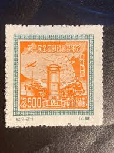 |
| eBay Canada | PR China 1950 Postal Conference Scott# 72-73 Mint Never Hinged VF/XF Gem | eBay | 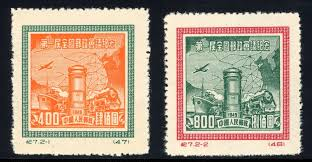 |
| eBay | Communication Postage Chinese Stamps for sale | eBay | 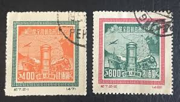 |
| Freestampcatalogue.com | Stamps from China People's Republic - Freestampcatalogue.com - The free online stampcatalogue with over 500.000 stamps listed. | 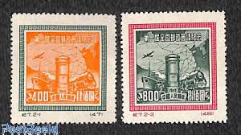 |
| LiveAuctioneers | Vietnam War "huey Gi Peace Sign" Print | 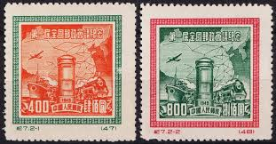 |
| World Stamps Project | China-1950-Postal-Conference-postage-stamp-reprint – World Stamps Project | 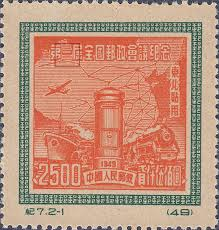 |
| eBay | Decimal 1941-1950 Year of Issue Chinese Stamps for sale | eBay | 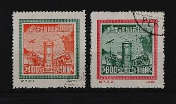 |
| HipStamp | China, Peoples Republic of - Scott 72-73 Reprints (1950) Mint NH VF C | Asia - China, General Issue Stamp / HipStamp | 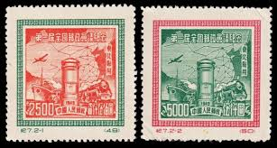 |
| eBay | XF (Extremely Fine) Chinese Stamps for sale | eBay | 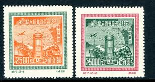 |
| Etsy | Pmc China - Etsy | 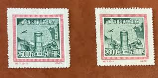 |
| Free stamp catalogue | Stamps from China People's Republic - Freestampcatalogue.com - The free online stampcatalogue with over 500.000 stamps listed. | 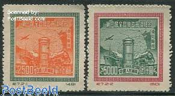 |
| Stamp Auction Network | catalog Level 3 | 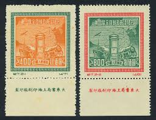 |
| HipPostcard | 266446 CHINA 1950 year stamp | Asia & Middle East - China, Postcard / HipPostcard | 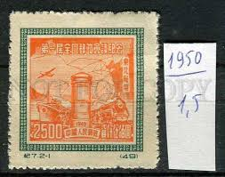 |
| eBay | CHINA P.R.C. SC# 72 - REPRINTS - MNH | eBay | 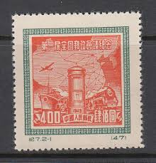 |
| eBay | China 1950. C7. Communication & Map of China. Sc#72,73 Reprint Used 1950 | eBay | |
| eBay | CHINA PRC Sc. #1L162 scarce used stamp (reprint)! | eBay | 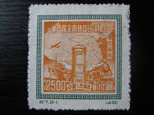 |
| eBay | PR China 1950 Postal Conference Scott# 72-73 Mint Never Hinged VF/XF Gem | eBay | 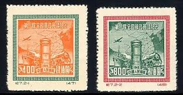 |
| eBay | China 1950 - Mint stamp issued without gum. Mi nr.: 82. REPRINT.. (VG) MV-18009 | eBay | 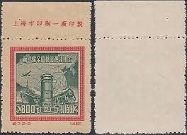 |
| eBay | China Stamp C7 First National Postal Conference Commemorative New Stamps OG | eBay | 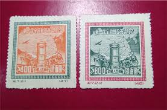 |
| eBay | China 1950. C7. Communication &Map of China. Sc#72,73. MNH | eBay | 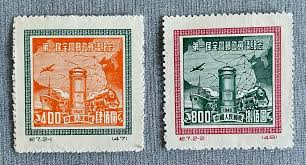 |
| eBay | China Stamps -中国邮票- 1950, C7R, Scott 72-3第一届全国邮政会议纪念, MNH, VF | eBay | 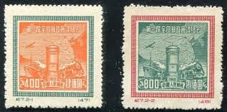 |
| Xabusiness.com | 1950 China Stamps | 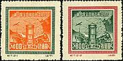 |
| eBay | China Sc 72-3, C7, Reprint, Mint, No Gum As Issued, Fresh Color, Very Fine | eBay | 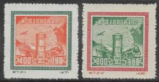 |
| eBay | People's Republic of China Scott #72 REPRINT Used | eBay | 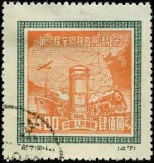 |
| eBay | 1949-50 PRC China Sc# 1L162-63 reprints mint hinged. Transportation. | eBay | 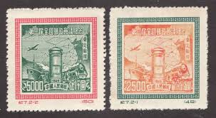 |
| eBay | Older MNG Stamps from China...................P-1203 | eBay | 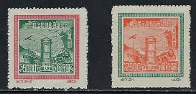 |
| eBay | CHINA PRC 1950 Sc#1L162-63 C7NE Postal Congress ORIGINAL Print Set MNH XF | eBay | 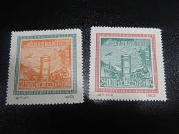 |
| eBay UK | N.E. China SC# 1L162 & 1L164 - Reprints Used - Lot 122815 | eBay UK | 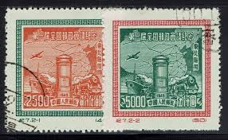 |
| Value of used 1950 China stamps? | 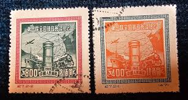 | |
| eBay | 1949 PR CHINA Sc #72-73 Original Complete Set MINT NEVER HINGED VERY FINE | eBay | 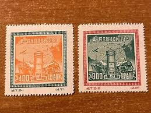 |
| eBay | 12425 China,MNG stamps set Nr:864-865 (Ivert numbers) | eBay | 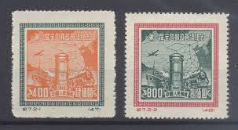 |
| eBay | CHINA - NORTH EAST CHINA - Scott IL162-IL163 - NGAI - perf 14 reprint --c | eBay | 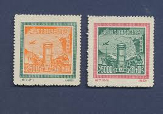 |
| eBay | CHINA PRC 1950 C7R POSTAL CONFERENCE (Scott 72-73R) REPRINTS VF MNH | eBay | 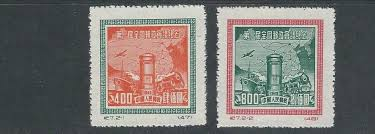 |
| eBay UK | 12425 China,MNG stamps set Nr:864-865 (Ivert numbers) | eBay UK | 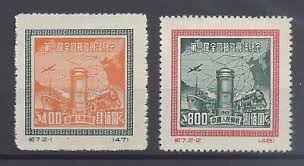 |
| Freestampcatalogue.it | Francobolli dal Repubblica Popolare Cinese - Freestampcatalogue.it - Il catalogo gratuito online di francobolli con più di 500.000 francobolli compresi | 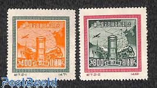 |
| Shutterstock | CHINA PRC - 1950 1 de Foto de stock 2199655565 | Shutterstock | 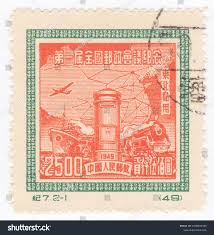 |
| eBay | China PRC 1950 N.E.China AL Conf. (Sc 1L162-1L163R) VF MNH | eBay | 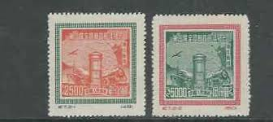 |
| eBay | CHINA - PRC Sc 1L162-63 (REPRINTS) NH ISSUE OF 1950 - POSTAL CONFERENCE | eBay | 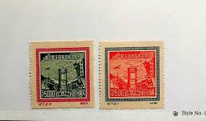 |
| eBay | (PRC)1950 Sc 72/3,1L162/3 two sets MNG v1694 | eBay | 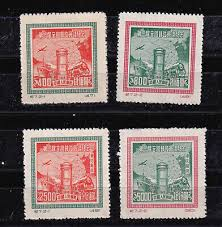 |
| eBay | Ships, Boats Used Postage Chinese Stamps for sale | eBay | 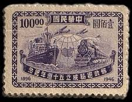 |
| eBay | Historical Events Individual Chinese Stamps for sale | eBay | 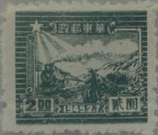 |
| eBay | Cancelled to Order/CTO Asian Stamps for sale | eBay | 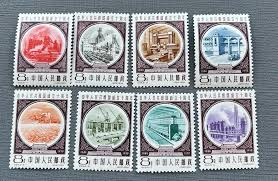 |
| Stamp Community Forum | Need Help With Chinese Stamps, Please. - Stamp Community Forum | 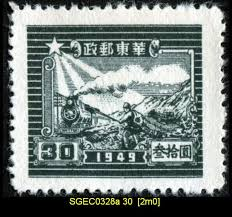 |
| Discover 690 Stamps from around the World and postage stamps ideas | stamp collecting, stamp, postal stamps and more | 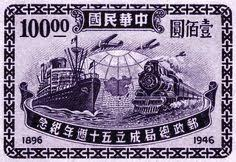 | |
| eBay | Vintage R.O.C. Chinese Stamp, 1896-1946, $100, Train and Ship | eBay | 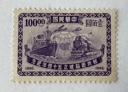 |
| 中華郵政 | The Postal Universal Website of R.O.C ─ Stamp House - Pages | 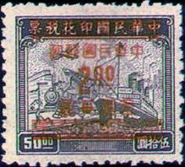 |
| eBay | Chinese "Stamp Art" Postcard, "Chinese Boy on a Swing", 1913 Era Stamps, Nr-MT | eBay | |
| eBay | Chinese Trains, Railroads Stamps for sale | eBay | |
| YouTube | STAMPS COLLECTION CHINA - YouTube | |
| eBay | China 1949 - East China (China liberada do Leste) - (Sc 5L 71 A3) | eBay | |
| eBay | China Old Stamp Qing Dynasty Imperial /ManChouKuo /ROC / T /J , YOU PICK - Mint | eBay | |
| eBay | Error, Variety Chinese Stamps for sale | eBay | |
| eBay | Postage Stamp of CHINA MNG A29P37F37493 | eBay | |
| HipStamp | China Stamp: 1944-Sc$915- Gold Yuan Surcharge on Revenue Stamp-North China Mint | Asia - China, Stamp / HipStamp | |
| How can I tell if these are the expensive or cheaper ones please |